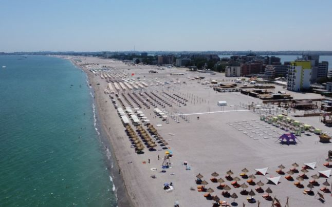
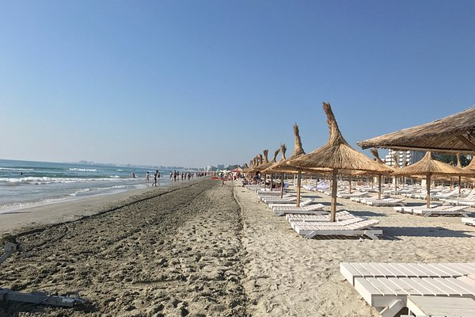
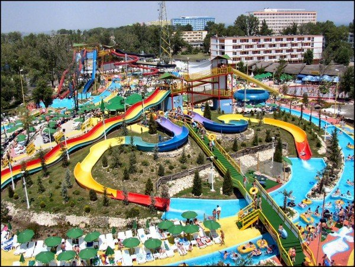
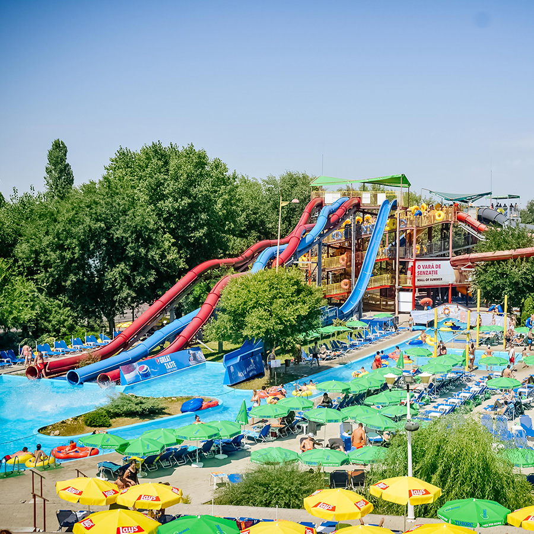
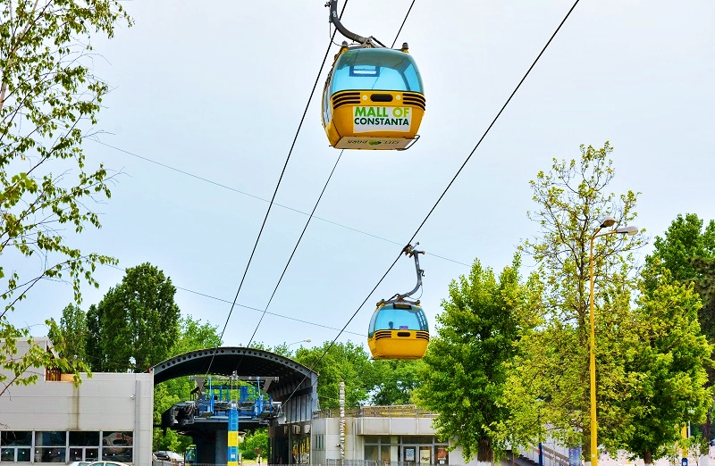
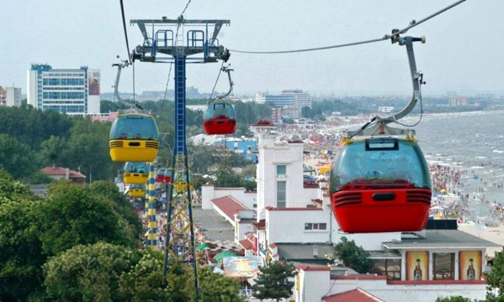

MAMAIA
Particularitatea statiunii Mamaia este latimea mare a plajei si lungimea ei de peste 8 km. In ultima vreme in statiunea mamaia s-a investit foarte mult, atat in infrastructura statiunii, cat si in modernizarea unitatilor de cazare existente.
Principala statiune aflata la nord de Constanta este Mamaia, care se intinde pe o distanta de sapte kilometri intre o splendida plaja cu nisip fin si un lac. Aceasta statiune este recomandata in special pentru familiile cu copii. Aici se pot practica scufundarile si zborul cu parapanta pe toata perioada estivala. Hotelurile, restaurantele, barurile si cluburile de noapte aflate in statiune ofera un mod de relaxare in fiecare seara. Din Mamaia se poate ajunge foarte usor pentru vizitarea altor obiective turistice din zona precum ruinele cetatii antice grecesti din Histria si Delta Dunarii.


AQUA MAGIC
Statiunea Mamaia are un numar mare de fantani arteziene si mai nou palmieri, locuri de promenada, terenuri sportive locuri de joaca pentru copii, locuri de distractie. Una dintre principalele atractii ale statiunii este parcul acvatic Aqua Magic, care este un loc de distractie pentru turisti. Aqua Magic este situat la intrarea in statiune si se adreseaza turistilor de toate varstele, avand o capacitate de 2.500 vizitatori. Cu o suprafata de 4000 mp de apa, parcul de distractie cuprinde tobogane, piscine si bazine.
In acest parc se gasesc restaurante, baruri, fast-food, cofetarii,precum si suveniruri si ilustrate. Turistii pot opta pentru o plaja pe sezlonguri si baie in piscina. Aqua Magic este iluminat astfel incat se pot organiza spectacole, sau alte petreceri nocturne, vizitatorii avand posbilitati de distractie atat ziua cat si noaptea. Pentru prima data aici s-a construit un ring de dans in aer liber, cu efecte luminoase si sonorizari precum si jocuri de apa care functioneaza in functie de ritmul muzicii.


TELEGONDOLA
Telegondola din Mamaia, inaugurata in anul 2004 este o instalatie de transport pe cablu, care permite turistilor strabaterea la inaltime a statiunii oferind o imagine de neuitat asupra statiunii Mamaia, Marii Negre si a lacului Sutghiol. Aceasta constituie in Romania o realizare unica si unul dintre putinele proiecte de acest tip din lume. Proiectul Telegondola este un mijloc care se adreseaza turistilor doritori sa admire la inaltime statiunea Mamaia, putandu-se imbarca in doua statii, in zona hotelului Perla si in zona Cazinoului.
Turistii pot zbura efectiv pe deasupra statiunii Mamaia, timp de aproximativ sapte minute, la o inaltime maxima de 50 de metri. Capacitatea unei gondole este de opt locuri, aceasta fiind inchisa, cu ventilatie naturala, cu protectie la soare si cu o vizibilitate foarte buna. Pentru realizarea telegondolei s-au folosit echipamentele de ultima generatie in conformitate cu standardele internationale, asigurand turistilor un grad de siguranta deosebit. Lungimea traseului este de 2 km.